I used a good portion of my time relearning
woodworking practices and studying shelf designs.
Before this project, I built my desk so I had some
woodworking experience. However, as someone
learning the craft on their own, there is always more
to learn.
I learned creative ways to hide screws and nails, how
to maintain structural integrity and how to be more
conservative with wood glue. At the same time, I
continued looking at plant shelf designs—applying
what I learned to the designs I studied.
Researching plant shelves helped me see what
designs were out there as well as assess the total
cost ( time, money, and work ) of this project. I
found that most plant shelves are designed for short
and fairly small plants. Buying a shelf would mean
waiting for shipping and I would have no
guarantee that the shelf would support my growing
plant family.
There were features and construction methods I
wanted to use ( for example, a rod for hanging plants
or pocket holes ), but I learned that I didn’t have the
right materials or that I needed more practice in order
to implement them. I iterated through sketches and
brainstorms and broke down the building process for
each design and silhouette.
This was the first time I didn’t make multiple prototypes for a project. Normally I sketch, make
digital renderings, and build low level prototypes, but the longer I took on for this project, the
unhealthier my plants would become. With 3 (Update: 4) aloe sproutlings on the way, I needed
to move. I chose a shelf height and plugged in my jigsaw.
For the first tier, I measured out 8 legs with one being
much thinner than the rest. The thin leg served as a
practice round since I haven’t used my jigsaw in
months.
It was a good decision.
I cut the remaining legs in a style that
matched my desk’s legs and began
prepping my materials. I traced the
wheelbase onto the bottom of the shelf,
sanded the legs, and marked which side
was the bottom of the leg.
The plan:
The wheels have a base with 4 screw holes. The
plan was to drill a screw through the wheelbase,
through the shelf base, and into the leg. The
remaining screw holes would have smaller screws
that didn’t go through the base. Then I would
build the next 2 tiers in the same way.
Mistake #1
I thought attaching the wheels first would be a good idea. I
can see the mistake even as I write this: attaching the wheel
first could mean an unbalanced base, i.e. angles legs.
Luckily, I was able to remove the wheel.
I attached the first leg and wheel, balanced it on top of
another leg and against a wall, and called it a night.
Mistake #2
Everything—even the screws I used—were repurposed from
other furniture or projects. At one point in this project, I
thought I didn’t have enough screws to complete the
project. I ordered screws but I miscalculated their size. When
I saw how big the screws really were, I decided to test them
on some scrap and . . .
I reviewed my designs and reorganized
my inventory. With a few changes, I had
just enough screws to finish the project.
I immediately built the bottom tier. I
repurposed angle brackets from a
closet an used them to support the legs.
This also allowed me to cleverly attach
the 2nd tier. That same night, I finished
the plant shelf.
My plants had a new home.
I got to work.
•
Strong enough to hold mt plants
•
Can hold various pots
•
Maximizes sunlight
•
Bonus: Hold my plant supplies
After I graduated from Smith, I moved back to NYC.
Throughout my college career I owned multiple plants. Now
years later, my plants need a place to sit and they can’t fit on
a windowsill anymore. Using some of the remaining materials
from a previous project, I set out to make a plant shelf.
This was my wishlist:
Plant Shelf
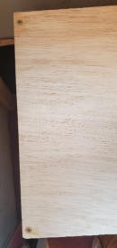
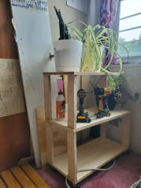
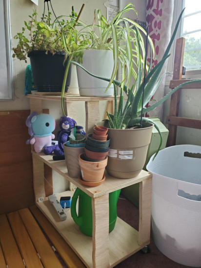
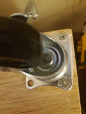
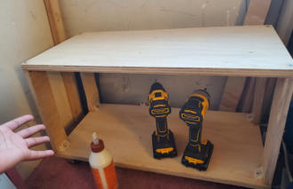
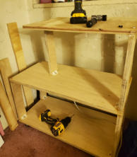


Design Projects

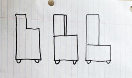
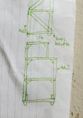
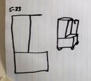
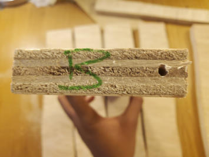


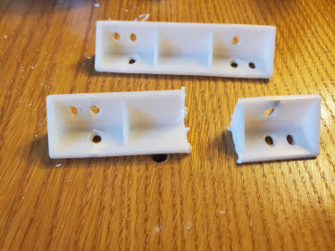